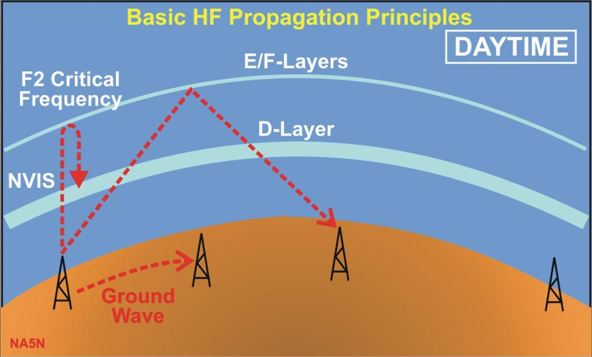
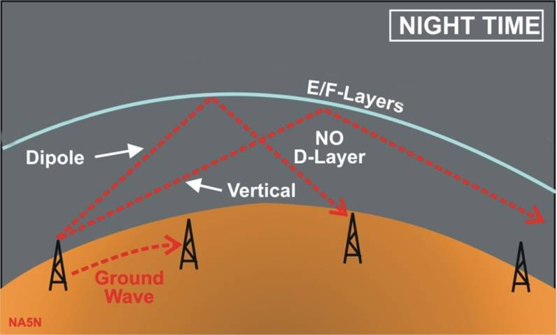
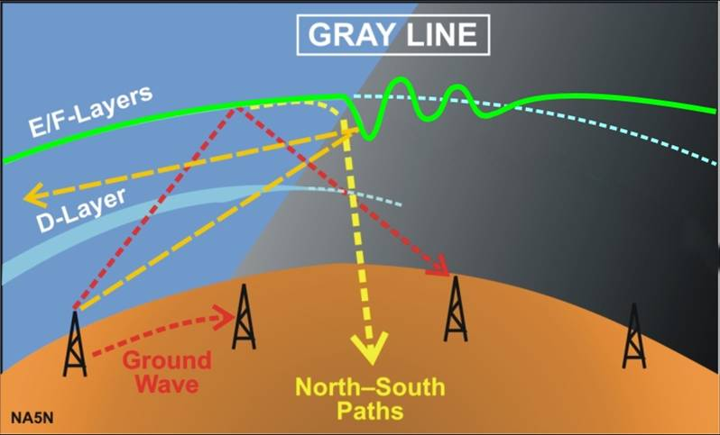
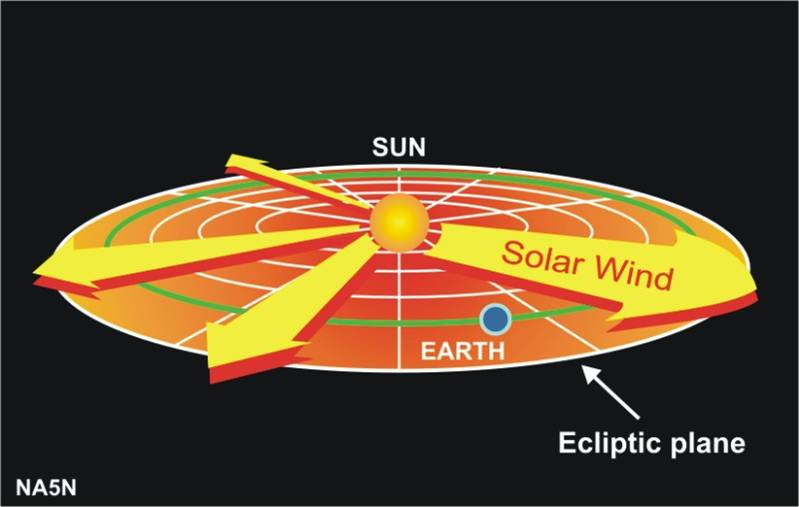
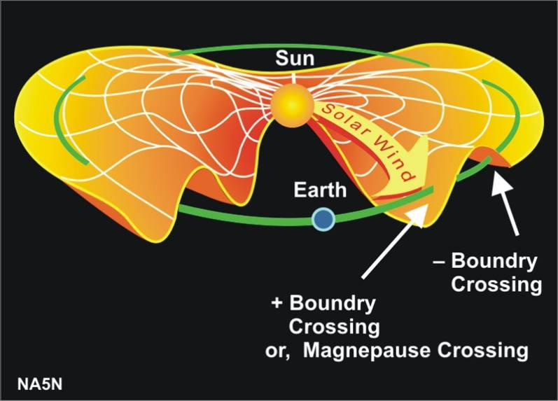
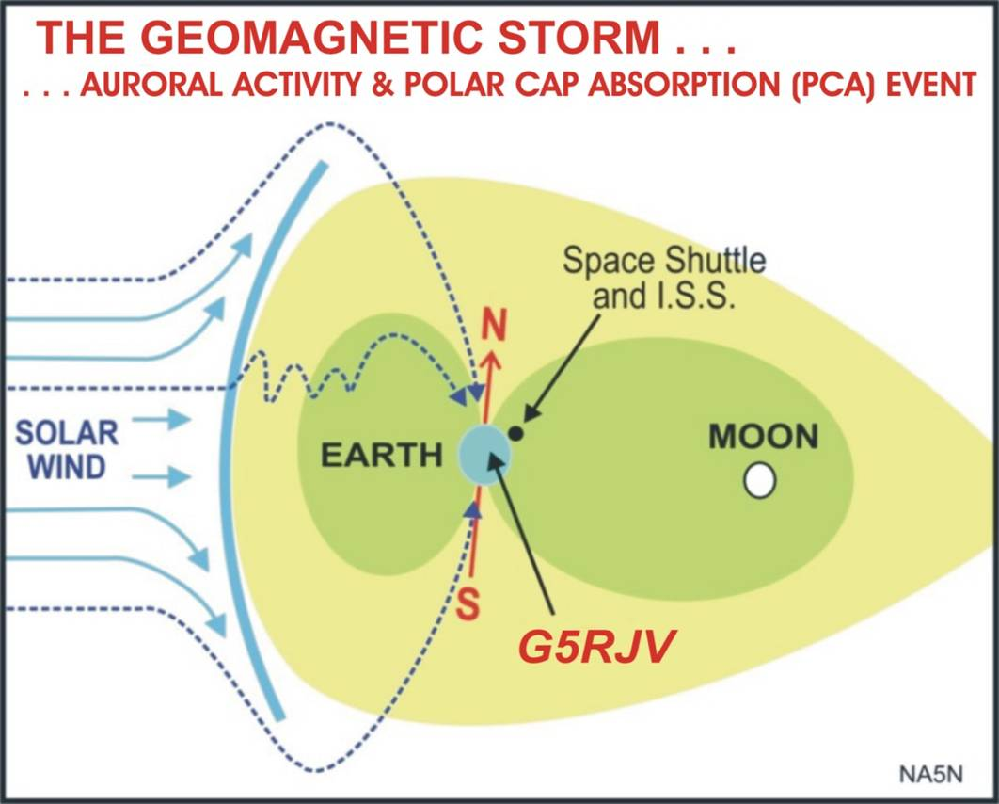

The following section contains links to and Propagation information from Paul Harden NA5N
SOLAR ACTIVITY & HF PROPAGATION FOR THE QRPer by Paul Harden, NA5N
SOLAR ACTIVITY & HF PROPAGATION PDF from FDIM 2005 by Paul
Propagation Primer 101
|
Gang,
For those of you who seem hopelessly lost with all this solar and propagation
stuff, I will attempt a quick primer that will hopefully help.
=================================
We all know the sun goes through a solar cycle about every 11 years. During the
minimum, or QUIET SUN, there are few sunspots, the solar flux is very low
(<100), which means the sun's ionizing radiation is quite low. As a result, our
upper atmosphere, where the E and F layers reside, are not well ionized. This
means the E and F layers do not reflect HF radio waves very well ... and most of
your signals will pass right on through to space to be picked up by Jodie Foster
in the sequel to "Contact." One measure of how well ionized our E and F layers
are is the MUF, or Maximum Usable Frequency. During the quiet sun, the MUF is
often below 15-18MHz. This is why 15M and 10M are "dead" during the quiet sun,
except for local (line-of-sight) communications.
However, during the solar maximum or ACTIVE SUN, there are many sunspots,
the solar flux is high, and this highly ionizes our ionosphere. This in turn
means our E and F layers become very reflective to HF signals. Virtually all the
power hitting the E and F layers will be reflected back to Earth and Jodie
Foster will hear nothing out in space. This high reflectivity causes the MUF to
rise, often to above 30MHz. And when this occurs, 10M will be open all day long
to support global communications by using "skip propagation" ... in that your
signals are skipping (or being reflected) off the ionosphere back to earth.
OK ... now a couple of definitions:
SOLAR FLUX (SF) is a number that attempts to describe the total power
output of the sun at radio wavelengths, which in turn helps describe the total
ionizing power delivered to our ionosphere. The higher the SF, the more
ionization, and the more reflective our ionosphere is to HF.
An SF <100 is fairly poor propagation, the MUF <15MHz
An SF >150 is
fairly good propagation, the MUF >25MHz
A general rule of the thumb is 10M is open when the solar flux >150.
IONIZATION. The solar radiation reaching the Earth contains IONIZING
radiation. This means the incoming solar radiation can rip electrons away from
the oxygen molecules high in our atmosphere. So now you have all these "free
electrons" roaming around that makes the upper atmosphere (or ionosphere) more
dense. Now the mass or weight doesn't change, it's just denser. Think of a bunch
of popcorn balls on a floor, and shooting a marble through the open spaces
without hitting a popcorn ball. Likely, not hard to do. The marble represents
your radio signal passing through to space. Now go out there and stomp those
popcorn balls so a bunch of individual popcorn kernels are scattered all over
the floor. The mass of the popcorn has not changed, but it is distributed to
make the field more dense. Now try to shoot that marble across the floor without
touching a piece of popcorn. Gonna be very hard to do. The marble, or your RF
signal, does NOT pass on to space. In the real case, your RF signal
strikes all these free electrons, and that is what reflects them back to earth
... DURING DAYLIGHT HOURS when ionization occurs.



SUMMARY:
....BAND.... THE QUIET SUN.......... / ..........THE ACTIVE SUN
--------------------------------------------------------------------
....80M.... Seldom has skip propagation.....Seldom has skip propagation
....40M.... Open around the clock.................Open around the clock
....30M.... Open daylight hours......................Open around the clock
....20M.... Open daylight hours......................Open around the clock
(usually)
....15M.... Dead - no skip propagation..........Open - daylight hours only
....10M.... Dead - no skip propagation..........Open - daylight hours only
--------------------------------------------------------------------
If you have questions about the above, I suggest you pose them on qrp-l so I and
others can answer them for the benefit of all those interested.
72, Paul NA5N (1 July 1999)
PS - I do not, however, fully understand the effects of the solar cycle on dummy
load operations, the effects on drilling steel, how it effects the NC-20 AGC, or
that Canadian Bouquet thing. :-)


